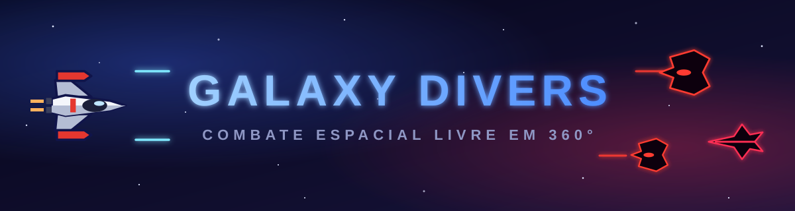
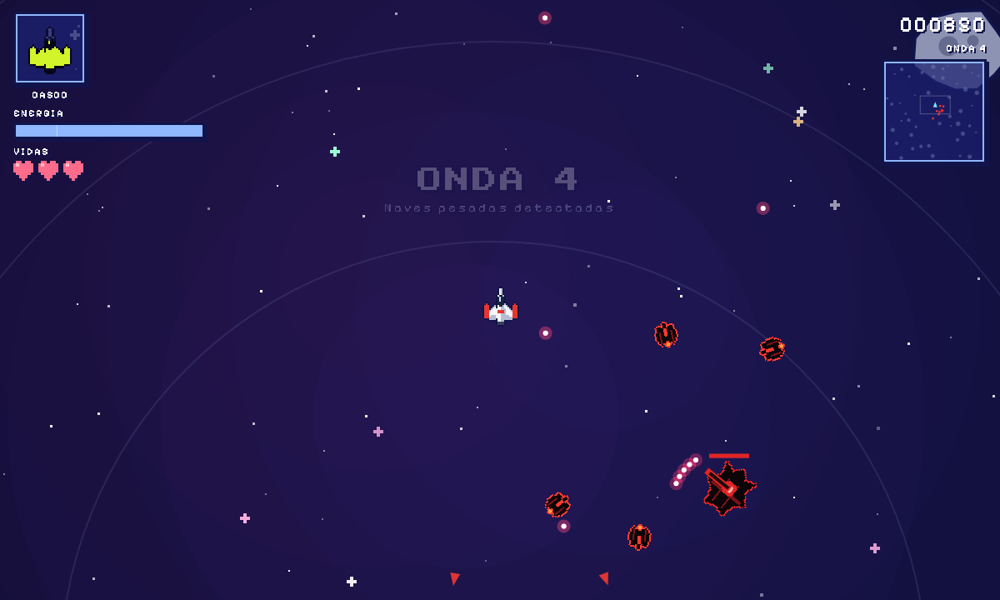
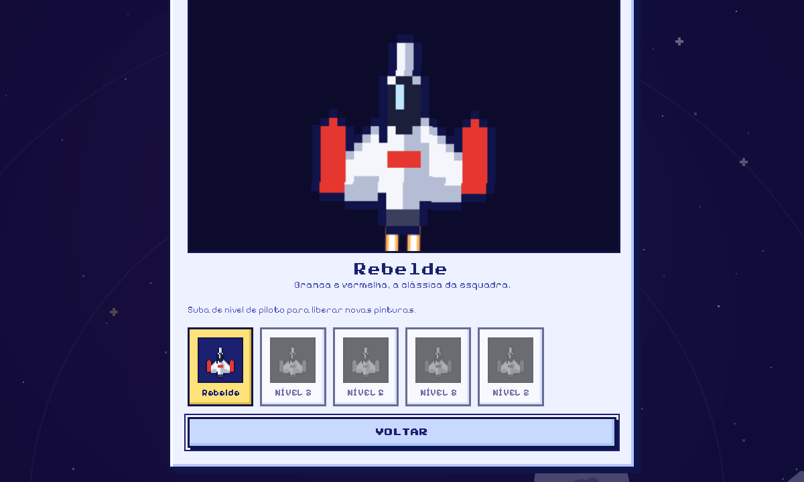
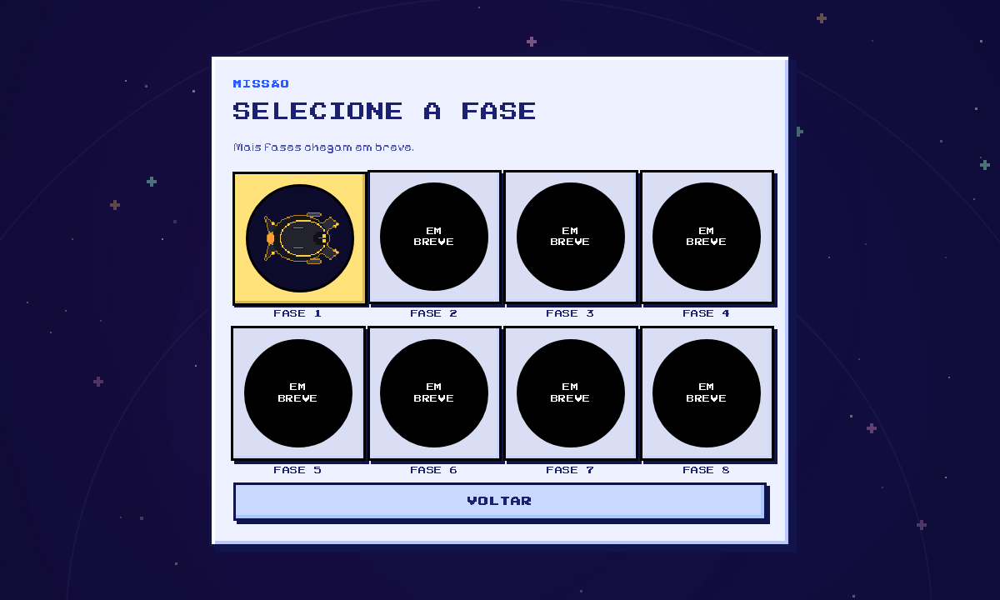
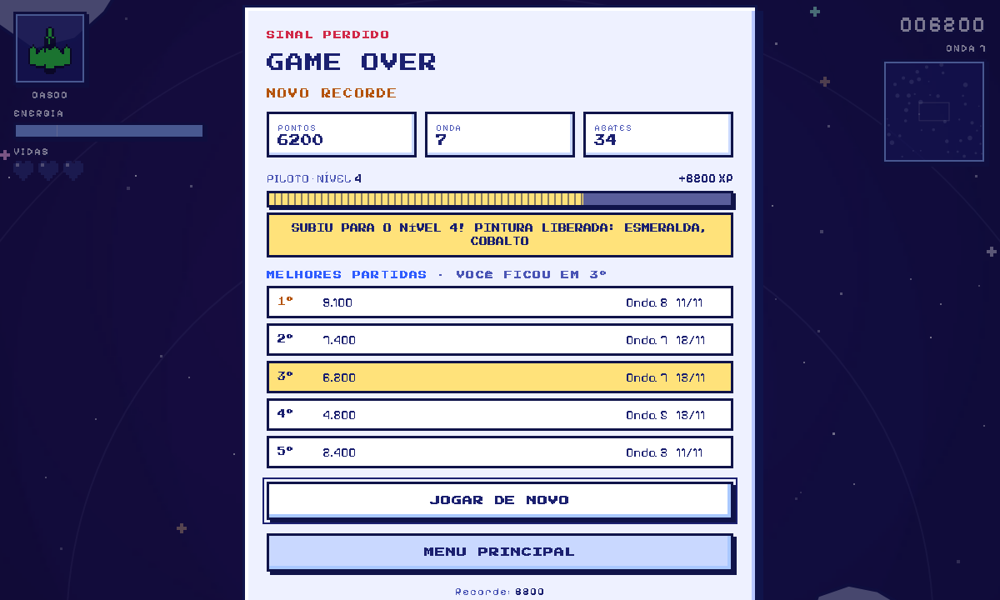
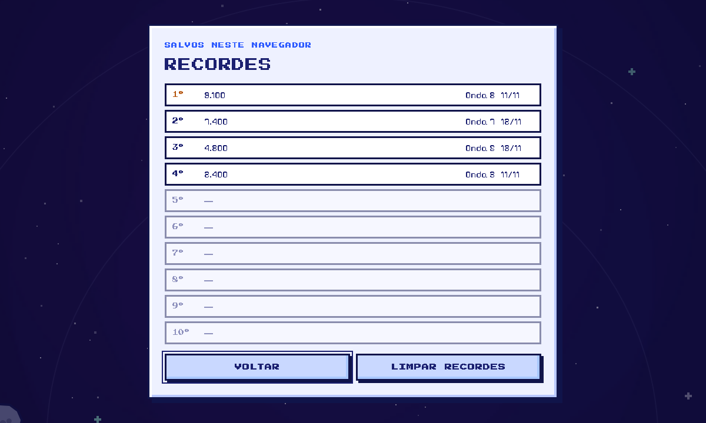
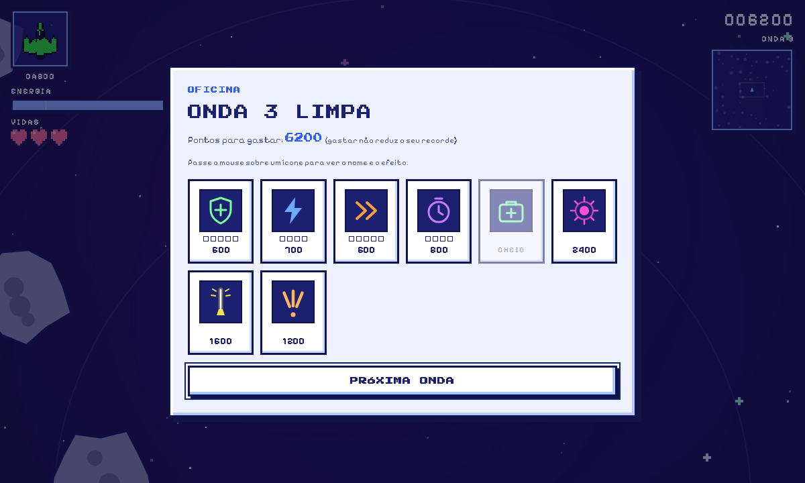
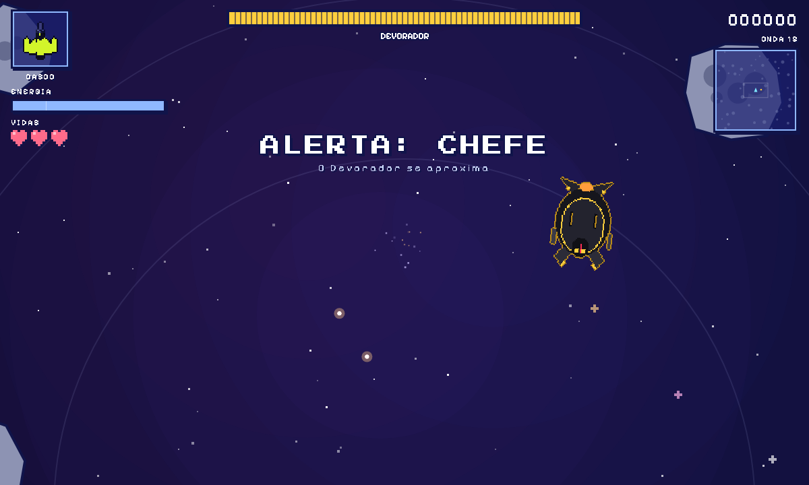
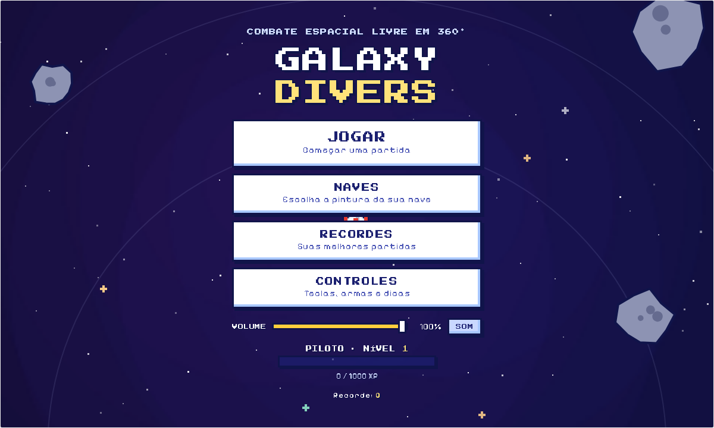
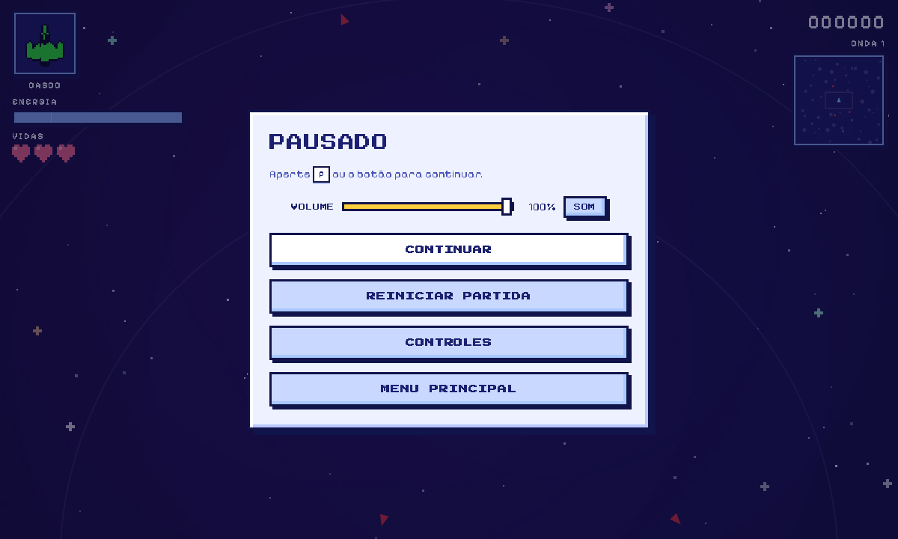

GALAXY DIVERS
Pilote, esquive e destrua esquadrões alienígenas, onda após onda, até enfrentar o chefe. Combate espacial em pixel art com movimento livre em 360°, direto no navegador, no computador ou no celular.
O jogo em ação
Visão de cima, inércia de verdade e mira livre com o mouse. Você foge para um lado e atira para o outro, usa os asteroides contra os inimigos e gasta seus pontos numa Oficina entre as ondas.

Mira e movimento separados
WASD movem a nave e o mouse mira e atira. A nave sempre aponta para a mira.
Manobra lateral e boost
A manobra com giro deixa a nave invulnerável por um instante, e esquivar de um tiro de raspão dá pontos extras. O boost gasta energia.
Asteroides e combo
As rochas machucam você, mas também os inimigos. Derrubar inimigos em sequência sobe o combo, até x5.
3 vidas
Ao perder o casco, a nave renasce com o casco cheio e protegida por alguns segundos. Sem vidas, é Game Over.
Hangar de naves
Em Naves, no menu principal, você vê a sua nave numa prévia animada e escolhe a pintura. As pinturas são liberadas conforme o seu nível de piloto, e a escolha fica salva no navegador.

5 pinturas
O desenho da nave é o mesmo, só mudam as cores. A pintura vale também para o ícone e para os tiros.
Seleção de fases
Ao clicar em Jogar você escolhe a missão. São 8 vagas, e por enquanto só a primeira está aberta.

Fase 1
Ondas crescentes de caças, interceptadores e naves pesadas. Na onda 15 entra o chefe Devorador, e depois dele as ondas continuam.
EM BREVEFases 2 a 8
As outras sete vagas aparecem bloqueadas, esperando novas missões.
Game Over e progresso
Cada partida conta. O fim de jogo mostra como você foi, guarda as suas melhores partidas e transforma pontos em XP de piloto.

Game Over
Mostra pontos, onda, abates, o XP ganho e a sua posição entre as melhores partidas. Daí é só jogar de novo ou voltar ao menu.
Recordes locais
As 10 melhores partidas, com pontos, onda e data, ficam salvas no seu navegador. Dá para ver a lista em “Recordes”, no menu.
Nível de piloto
Cada partida rende XP igual aos seus pontos. O nível 2 pede 1.000 XP e cada nível seguinte pede 500 a mais, até o nível 30. Subir de nível libera novas pinturas da nave.

| Nível | Pintura liberada |
|---|---|
| 1 | Rebelde (branca e vermelha) |
| 2 | Cobalto |
| 3 | Esmeralda |
| 5 | Solar |
| 8 | Fantasma |
Oficina de melhorias
Ao limpar uma onda, o jogo abre a Oficina. Passe o mouse sobre cada ícone para ver o nome e o efeito. Gastar pontos não reduz o seu recorde.

| Item | Efeito | Preço |
|---|---|---|
| Casco reforçado | +25 de vida máxima e repara 25 (5 níveis) | 600 +500/nível |
| Eficiência de energia | −12% no gasto de manobras e boost (4 níveis) | 700 +600/nível |
| Motores | +8% de velocidade e aceleração (5 níveis) | 600 +500/nível |
| Recarga especial | −10% na recarga das armas especiais (4 níveis) | 800 +700/nível |
| Reparo de emergência | Restaura metade do casco | 400 |
| Esfera de Plasma | Desbloqueia a arma | 2400 |
| Laser | Desbloqueia a arma | 1600 |
| Rajada Tripla | Desbloqueia a arma | 1200 |
Esfera de Plasma
Segure para carregar e solte. Explode em área, destrói asteroides e os destroços ferem os inimigos.
Laser
Feixe rápido de 1 s com pouco dano, que atordoa os inimigos atingidos por 1,5 s.
Rajada Tripla
Três tiros pesados de uma vez, em leque. Cada arma tem recarga própria, mesmo quando você troca.
Bestiário alienígena
Naves vermelhas e pretas em pixel art. Elas ficam brancas ao levar dano e amarelas quando atordoadas.
Caça
Circula você e atira. Parte deles desvia dos asteroides.
Interceptador
Rápido e frágil. De tempos em tempos avisa, trava a mira e investe com tudo.
Dá para escapar saindo da linha ou com a manobra lateral na hora certa (+150 pontos).
Pesada
Lenta e resistente. Dispara rajadas em leque com uma torre que acompanha você.

O Devorador
Uma canhoneira negra com acabamento dourado, garras na frente e máscara de olhos dourados. A vida dele aparece numa barra no topo da tela.
- 220 de vida e imune ao atordoamento do laser.
- Atira leques e solta anéis de projéteis que dá para atravessar pelas brechas.
- Abaixo de 50% da vida entra em fúria e chama dois interceptadores de reforço.
- Derrotá-lo vale 5.000 pontos.
Controles e execução
Teclado e mouse são o ideal, e no celular há controles na tela. As teclas abaixo são as padrão e dá para trocá-las em Controles, no menu principal ou na pausa.

| Tecla / mouse | Ação |
|---|---|
| WASD | Mover a nave (as setas também funcionam) |
| Mouse | Mirar |
| Botão esquerdo ou R | Atirar |
| C | Manobra lateral com giro |
| Shift | Boost, enquanto se move |
| Botão direito ou F | Arma especial selecionada |
| Scroll ou QE | Trocar de arma especial |
| 123 | Plasma, Laser ou Rajada Tripla |
| P ou Esc | Pausar e continuar |
| M | Ligar / desligar o som |

Pausa, volume e controles
A pausa tem Continuar, Reiniciar partida, Controles e Menu principal, além do volume (0 a 100%) com botão de mudo. Tudo fica salvo no navegador.
No celular
Joystick à esquerda e, à direita, os botões FOGO, BOOST, manobras laterais, ESPECIAL e TROCAR. O botão II, no topo, pausa o jogo, e o aparelho vibra quando você leva dano.
Direto no navegador
Clique em “Jogar agora”. Funciona em Chrome, Edge, Firefox e Safari, sem instalar nada. Em tela cheia (F11) fica melhor.
Baixar o jogo
O jogo é um único arquivo HTML. Baixe pelo repositório e abra com dois cliques.
Clonar o código
git clone https://github.com/nicolasmoreira284/Galaxy_Divers.git
Os esquadrões estão chegando.
Assuma o comando da nave e veja até que onda você chega.